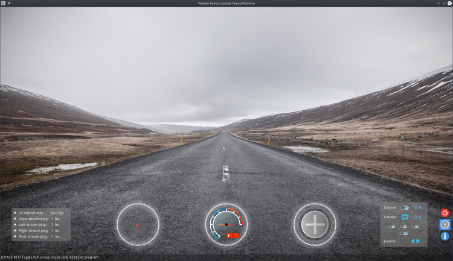
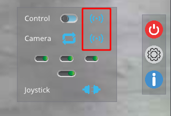
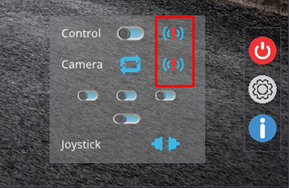
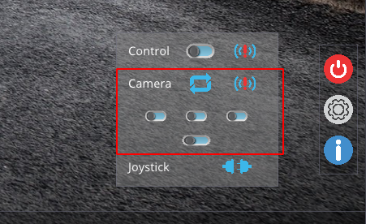
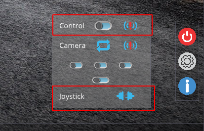
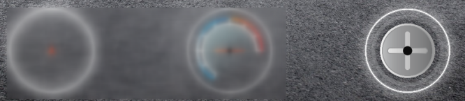
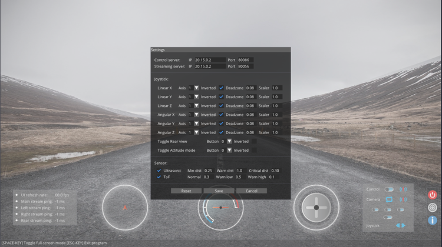
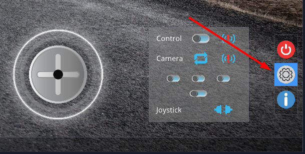
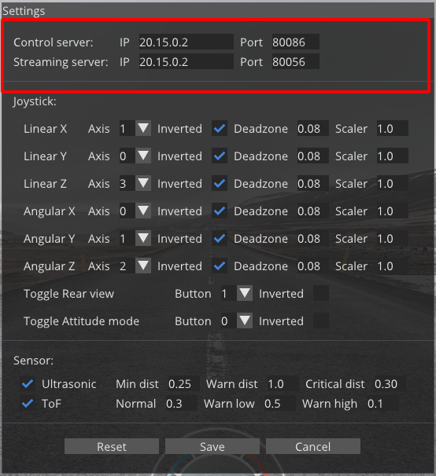
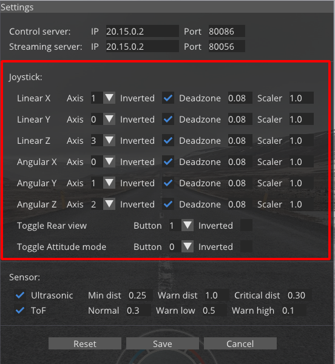

Weston Robot Asssisted Driving Toolbox (ADT)¶
Weston Robot proudly presents the Assisted Driving Toolbox (ADT), a teleoperation system designed and developed by Weston Robot for usage on multiple mobile robot platforms. The system allows the the control and operation of an robot through a shared network; with a wide coverage of its surroundings using mounted onboard camera modules.

Assisted Driving Server Setup¶
Service Management¶
The Assisted Driving Toolbox servers has been configured to startup upon the robot’s boot up as a systemd service.
To restart the server
$ sudo systemctl restart wr_adt_server.service
To stop the server (does not carry over through reboots)
$ sudo systemctl stop wr_adt_server.service
To permanently enable/disable the server (carry over through reboot)
$ sudo systemctl enable/disable wr_adt_server.service
Video Streaming Configuration¶
The following parameters can be configured:
Camera (/opt/weston_robot/docker/wr_adt_server/config.yaml)
Image resolution
Compression rate
Video stream endpoints
Server (/opt/weston_robot/docker/wr_adt_server/docker-compose.yaml)
Streaming ip address
You can refer to comments inside the cooresponding configuration file for available options.
Assisted Driving Client Setup¶
System Requirements¶
Host computer running Ubuntu 18.04/20.04
Joystick for control with the Assisted Driving Toolbox Client
Shared network between the robot and host computer
Client Software Installation¶
Follow the following commands in a terminal to install the Assisted Driving Toolbox Client on the host computer.
$ sudo apt-get install libglfw3-dev libyaml-cpp-dev libopencv-dev
$ echo "deb https://westonrobot.jfrog.io/artifactory/wrtoolbox-release $(lsb_release -cs) main" | sudo tee /etc/apt/sources.list.d/weston-robot.list
$ curl -sSL 'https://westonrobot.jfrog.io/artifactory/api/security/keypair/wr-deb/public' | sudo apt-key add -
$ sudo apt-get update
$ sudo apt-get install wr_assisted_teleop
Before continuing, retrieve the IP address of the robot’s wlan0 interface for client configuration later (see _configuration_ below).
To add path to environment
$ echo 'export PATH=/opt/weston_robot/bin:$PATH' >> ~/.bashrc
To (re)start the client
$ wr_assisted_teleop
The icons below show the status of the control and video streaming servers. The icons on the left screenshot indicates the services are online, while the one on the right indicates the services offline.
{kind=link}

{kind=link}

If system has been configured before, camera streams will automatically be enabled. To toggle individual camera streams, use the buttons below
{kind=link}

To toggle control of the robot (control disabled by default) and to view the status of attached joystick, use the buttons below
NOTE: Set height to the neutral position (50%) and check joystick behaviour (see below) before enabling control to avoid sudden movements.
{kind=link}

The joystick gauge displays the current state of the attached controlling joystick.
Please ensure that the joystick behaves as expected before enabling control of the robot.
If behaviour is incorrect, configure the joystick in the client’s settings menu.

The obstacle detection gauge displays the current feedback on any range finders in the system (when applicable)
The Speedo- and Battery meter gauge displays the current speed and battery’s charge (Upcoming feature)
Client Configuration¶
- On client’s first startup, “Settings” popup will prompt user to input the relevant settings for teleoperation, key settings include
Control server IP and port numbers
Streaming server IP and port numbers
Joystick mapping settings

To change settings after first startup, click the settings button at the bottom right of the client to access settings
{kind=link}

- Changing the IP address and ports of the Servers is as simple as changing the values below
This IP address should correspond to the robot’s wlan0 interface IP address by default
{kind=link}

- Changing the joystick mapping is as simple as changing the values below
- Mappings
Linear X - Forward/Reverse movement
Linear Y - Side-Side movement
Linear Z - Body height adjustment
Angular X - Body roll
Angular Y - Body pitch
Angular Z - Yaw movement
Below shows an example configuration using Logitech’s Extreme3DPro joystick
{kind=link}
